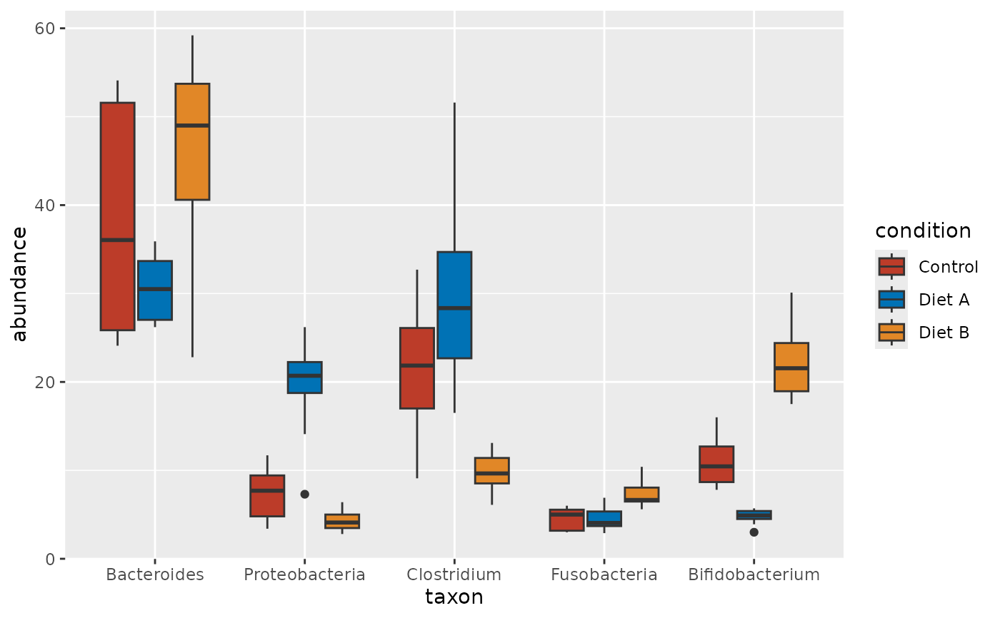
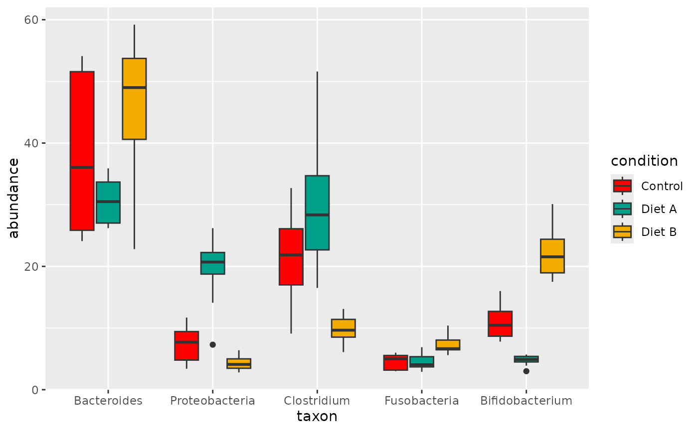

scale_color_set() and scale_fill_set() return a discrete color or fill
scale that is picked by name. One pair of functions thus reaches every
palette that themeset knows, and list_color_scales() shows the names.
Arguments
- set
The name of a color scale set. Run
list_color_scales()for the names.- ...
Passed on to the scale, for example
name,breaks,labelsorguide.
Names
Most names are plain. They come from the packages that themeset imports:
the discrete palettes of ggsci, among them the journal palettes npg,
aaas, nejm, lancet, jama, jco and bmj; avatar and simpsons
from tvthemes; olink from OlinkAnalyze; fivethirtyeight from ggthemes;
flexoki_light and flexoki_dark, the accent colors of the Flexoki scheme
for a light and for a dark background; and okabe_ito, the Okabe-Ito palette
of base R, which readers with color-vision deficiency can tell apart (eight
colors, seven and black).
The palettes of three more packages are listed as package::palette, for
example "wesanderson::Darjeeling1", when the package is installed:
wesanderson, biopalette and ggpalettes. They are suggested packages, so
themeset works without them.
Most palettes have a fixed number of colors and cannot color more levels
than that. olink and the palettes of ggpalettes interpolate instead, and
the flexoki sets repeat their eight colors.
Credits
The palettes belong to their authors; themeset only reaches them by name.
The names of the journal palettes tell where a palette took its inspiration.
themeset is not affiliated with any journal. The Okabe-Ito palette is the
work of Masataka Okabe and Kei Ito, and base R provides it in
grDevices::palette.colors().
See also
theme_color_scales for the scales with a function of their own.
Examples
library(ggplot2)
ggplot(example_taxa(), aes(taxon, abundance, fill = condition)) +
geom_boxplot() +
scale_fill_set("nejm")

if (requireNamespace("wesanderson", quietly = TRUE)) {
ggplot(example_taxa(), aes(taxon, abundance, fill = condition)) +
geom_boxplot() +
scale_fill_set("wesanderson::Darjeeling1")
}
